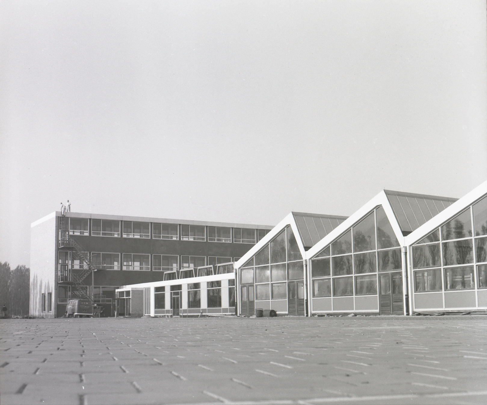

Dion Slegt
Clubkampioen

Tafeltennisvereniging VDO werd opgericht in 1964 en is daarmee al meer dan zestig jaar een vaste waarde in het tafeltennis. Wat begon als een kleine vereniging is uitgegroeid tot een club waar sportiviteit, gezelligheid en betrokkenheid centraal staan.
Bij VDO draait het niet alleen om winnen, maar vooral om samen beter worden. Spelers van alle niveaus zijn welkom: van recreanten tot fanatieke competitiespelers. Door de jaren heen hebben generaties leden hun passie voor tafeltennis gedeeld aan de tafel, met respect voor elkaar en voor het spel.
Onze club kenmerkt zich door een sterke onderlinge band, een actieve vereniging en een liefde voor tafeltennis die al sinds 1964 wordt doorgegeven. Of je nu komt om competitief te spelen, jezelf te verbeteren of gewoon voor het plezier: bij VDO voel je je snel thuis.

Binnen Tafeltennisvereniging VDO zijn er leden die zich op een bijzondere manier hebben ingezet voor de club. Door hun jarenlange betrokkenheid, inzet en toewijding hebben zij een blijvende bijdrage geleverd aan het voortbestaan en de ontwikkeling van VDO.
Als blijk van waardering worden deze leden benoemd tot erelid of lid van verdienste. Deze onderscheidingen zijn bedoeld voor mensen die, vaak achter de schermen, veel hebben betekend voor de vereniging — als speler, vrijwilliger, bestuurder of ondersteuner.
Hieronder staat een overzicht van de ereleden en leden van verdienste van VDO. Met deze vermelding spreken wij onze dank en waardering uit voor alles wat zij voor de club hebben gedaan en nog steeds betekenen.
| Jaartal | Lid van verdienste |
|---|---|
| 2010 | Han Albers |
| 2010 | Piet Keek |
| 2014 | Ruud van der Linden |
| 2014 | Maarten van Rossum |
| 2014 | John Titulaer |
| 2019 | Rob Wouters |
| 2022 | René van der Jagt |
| Jaartal | Erelid |
|---|---|
| 2010 | Jan Bekelaar |
| 2014 | Han Albers |
| 2014 | Piet Keek |
| 2023 | Kees Jager |